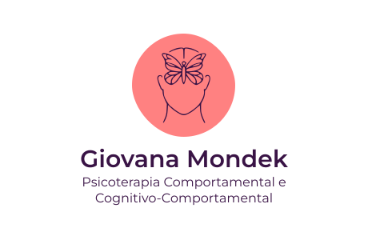
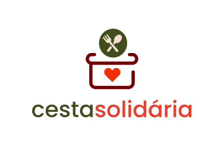
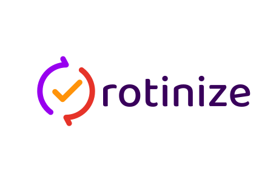

Sobre mim

Comecei minha jornada na tecnologia no final de 2023, estudando por conta própria através de cursos de curta duração, principalmente nas plataformas Alura e Cisco. No momento estou cursando Análise e Desenvolvimento de Sistemas na PUC Minas e desenvolvi este portfólio como um meio de demonstrar na prática os conhecimentos e habilidades que estou construindo.
Sou apaixonada pela área e busco constantemente me desafiar e aprender coisas novas. Como estudante, meu foco atual é explorar diferentes campos de conhecimento na tecnologia e me aprofundar naqueles que já tenho algum conhecimento. Estou aberta a oportunidades de estágio, colaborações e trabalhos voluntários.
Principais habilidades e tecnologias
C#
.NET
Projetos

Desenvolvimento web
Front-end
Uma landing page simples e responsiva para apresentar o trabalho de Giovana como psicóloga clínica.
Desenvolvimento web
Front-end
Uma aplicação web para acompanhamento de metas, despesas, receitas e saúde financeira, com exibição dos dados em uma dashboard.

Desenvolvimento web
Full-stack
Uma aplicação web que conecta doadores de alimentos a ONGs que os redistribuem a pessoas em situação de insegurança alimentar.

Desenvolvimento web
Full-stack
Uma aplicação web para estabelecer e acompanhar metas e atividades saudáveis na rotina.